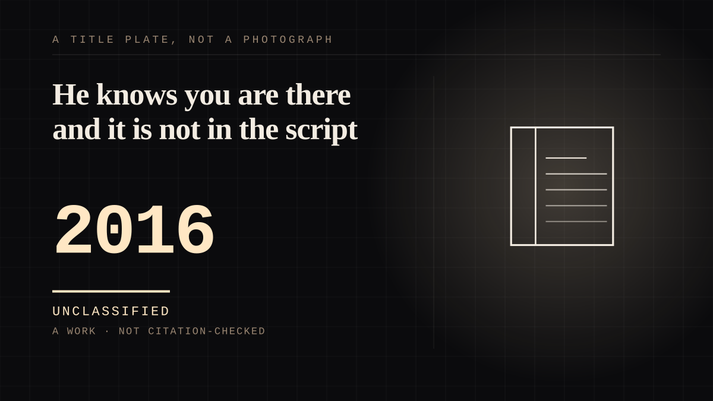

A work · 2016 · Contemporary
He knows you are there and it is not in the script
A character whose defining trait is looking at you, taken from the comics rather than invented for the film - and on a fifty-eight million dollar budget the address turned out to be the marketing.

The fourth-wall breach here is not a director's device, and that is what makes it worth an entry. The film "was set to ignore the Wolverine version of Deadpool and return to the character's roots with a slapstick tone and a 'propensity to break the fourth wall'" - so the looking-at-you is **in the characterization**, carried over from the comics, and it cannot be separated from who he is. Everything else about him is damage: scarred, immortal, in constant pain, dealing with a man who gave it to him. The one intact thing is his relationship to you. That is a different shape from a wink in a gag, and the film earns it by never asking the audience to forget that he is looking. The economics are the argument and they are unusually clean: greenlit by 20th Century Fox in 2014 after test footage leaked, $58 million budget, **$782.6 million** grossed. A hard-R character who addresses you directly is a marketing instrument, because he cannot be sold as anything other than what he is. It also inverts the usual censor problem - a film that talks back at the audience is a film nobody can confuse for something respectable, which is a benefit at a lower budget rather than a liability. And the line from the mechanism entry holds exactly: **he looks at the lens and cannot hear you.** That single sentence is the difference between `animate` and `transparasocial`, between a fictional figure that acknowledges an audience and a real person acknowledging you. The gesture is identical to a streamer reading out a comment and the structure is opposite, and an entry that blurred those two would be the same error as a citation with no locator - a promise the thing does not keep.
Where it sits
2010 2010+ · 2016 2026
Provenance · 1 source record(s)
- retrievableThe fourth wall as a character property rather than a director's choice, and the numbers: 'Deadpool is a 2016 American superhero film based on the Marvel Comics character Wade Wilson / Deadpool. Directed by Tim Miller, in his feature directorial debut, and written by Rhett Reese and Paul Wernick, it is a spin-off of the X-Men film series and its overall eighth installment. Ryan Reynolds stars as the titular character.' Following a greenlight from 20th Century Fox in 2014 after test footage for a potential film was leaked, principal photography took place; budget $58 million, gross $782.6 million, runtime 108 minutes. And: 'The spinoff was set to ignore the Wolverine version of Deadpool and return to the character's roots with a slapstick tone and a "propensity to break the fourth wall". Rhett Reese and Paul Wernick were hired to write the script in January 2010. Reynolds, who worked closely with them, said they were chosen because, "Tonally, they got it. They just [understood Deadpool] right off the bat."'Deadpool (film). Wikipedia. ↗
Not yet stood behind. The entry is real. A person has not read the citation and confirmed it, so treat the date as approximate until they do.
CHARACTER The written character
Connected · 3 out, 2 in
It sits in
The full timeline → · The database → · See it in the atlas →